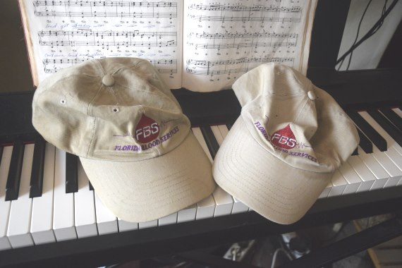

Séance du 18 mai 2019⚓︎
Séance du 18 mai 2019
Laura, Andromeda et Artemis à la planchette
Pierre, Joe, Chu, Ark, PoB, Scottie, Niall, Pikabu zee Cat, Noko the Wonderdog, Princess Leia, The Lunar Module
Q : (L) Nous sommes le 18 mai 2019. [revue des personnes présentes]
R : Bonsoir les enfants ! Joyeaeia de Cassiopée ici avec vous dans l’amour de la création infinie.
Q : (Andromeda) Quelle introduction !
(Artemis) C’est très prometteur.
(L) Eh bien, nous l’espérons parce que le monde lui-même est… assez intéressant. Quelqu’un a-t-il des questions rapides à poser avant que nous nous lancions dans les sujets plus compliqués ?
(Ark) Question sur l’antigravité. Ce sera rapide ou pas ?
(L) Vas-y, pose ta question sur l’anti-gravité. Tu peux être le premier. [rires]
(Ark) Donc, j’ai une petite bande de Möbius ici, qui a un seul côté. Mais en principe, il y a deux côtés. D’un côté, j’ai écrit « A », et de l’autre côté (qui est le même côté), j’ai écrit le 27 mai 1995. Je peux en quelque sorte voir l’autre côté de ce côté, alors ils communiquent. Ma question est essentiellement de savoir si notre univers est semblable à cela, et la date fait référence à la séance avec Roger Santilli et sa question :
Q : (RS) La gravité subie par une antiparticule dans le champ de matière est-elle répulsive ou attractive ?
R : Répulsive quand on la considère parallèlement à tes recherches, mais, comme nous l’avons laissé entendre dans la réponse précédente, plusieurs univers sont impliqués, outre celui qui t’est le plus familier.
(Ark) La question est donc de savoir si les anti-particules tombent ou montent. La réponse est qu’ils sont repoussants, mais ce n’est pas une réponse complète. Et ce que je veux demander… parce que si c’est le cas, nous devons faire quelque chose avec la théorie de gravitation d’Einstein parce que selon sa théorie, tout suivrait la même trajectoire ; mais ici, nous devons faire quelque chose avec la théorie d’Einstein et l’idée qui a été récemment mise en avant est la théorie dite bi-métrique de gravité. Il y a comme deux géométries...
R : Ohoalo dufile de planchette.
Q : (L) Qu’est-ce que c’était ?
(Ak) Quoi ?
(L) Je ne sais pas, je pense que tu ferais mieux d’être concis dans ta question.
(Ark) Ma question est donc la suivante : ce document que j’ai ici sur l’antigravité de Sabine Hossenfelder et cet autre document de notre ami Jean-Pierre Petit plus ou moins sur le même sujet, ces idées sont-elles plus ou moins exactes ?
R : Vont dans la bonne « direction ».
Q : (L) Très drôle.
(Ark) OK, donc je n’ai pas eu de réponse. Et je suis censé être concis, alors je démissionne.
(L) Pose ta prochaine question ! Répartis ta question en plusieurs parties.
(Ark) Pièces détachées.
(L) Sois précis.
(Ark) La théorie bi-métrique de la gravité est-elle correcte ?
R : Assez près, mais tu peux l’étendre et l’améliorer.
Q : (Ark) C’est ce à quoi je m’attendais. C’est essentiellement correct, mais je dois l’améliorer. Je vous remercie. J’en ai fini avec ça.
(L) OK, une question brûlante que nous avons à propos de la casquette d’Ark. Nous avons récemment eu un incident très étrange avec la casquette de baseball préférée d’Ark. On a toujours les deux casquettes ?
(Ark) Je pense que oui. Je n’ai pas vérifié aujourd’hui.
(L) Quoi qu’il en soit, il y a eu une deuxième casquette tout d’un coup. Il y a environ 21 ans, nous voulions savoir quel était notre groupe sanguin afin de pouvoir jouer avec le régime alimentaire basé sur le groupe sanguin. Alors, Ark et moi sommes allés à la banque de sang locale en Floride pour donner du sang parce qu’ils identifient votre groupe sanguin. Nous l’avons fait, Ark a failli s’évanouir, alors il n’a jamais plus donné son sang, et j’en ai redonné que depuis que nous sommes en France. À la fin de l’événement, ils avaient de petits cadeaux pour les hommes ou les femmes : Ark a reçu une casquette de baseball portant l’inscription « FBS » et, en dessous, « Florida Blood Services ». Je crois que j’ai eu quelque chose comme un portefeuille que tu mets autour de ta taille.
Les années passent, cette casquette est la préférée d’Ark parce qu’elle a exactement le bon poids et une couleur claire. Partout où il va, il prend cette casquette. Il l’a prise quand nous sommes allés en Italie il y a quelques années et elle est partie au vent quand nous étions à bord d’un autocar. Joe a alors demandé au chauffeur d’arrêter l’autocar et a couru dans la rue après la casquette. Un étranger l’avait attrapée et courait vers Joe avec, et Ark a ainsi récupéré sa casquette. Il a toujours été très protecteur depuis cet événement.
Il y a près de trois semaines, Ark est allé avec PoB dans sa voiture au magasin et à la banque. Quand il s’apprêtait à partir, il n’arrivait pas à trouver sa casquette, alors il est allé dans le placard et elle était là, sur l’étagère. Sur le chemin du retour du magasin, il a laissé la casquette sur le siège de la voiture de PoB. Un peu plus tard, il a décidé d’aller faire un tour à vélo et, tout en préparant son sac à dos, il en retire sa casquette et la met sur sa tête. Il est allé faire du vélo, est revenu, a mis la casquette sur son bureau. Un peu plus tard, PoB lui a apporté la casquette restée dans sa voiture. Et voilà qu'il y avait deux casquettes FBS. Identiques sauf que l’une était un peu plus propre que l’autre et que la plus sale avait une petite tache de sang sur la bande intérieure depuis qu’il s’était cogné la tête sur une poutre il y a quelque temps de cela.
Maintenant, la chose qui doit être absolument claire, c’est qu’il y a toujours eu qu’UNE seule casquette. C’est absolument et tout à fait certain ; aucun doute, aucune question. Il n’a jamais reçu d'autre casquette similaire ; j’ai gardé une trace de ses chapeaux et autres choses depuis plus de 20 ans et je peux vous assurer qu’il n’y avait qu’une seule casquette FBS. Il sait qu’il n’y en a qu’une seule et Joe est allé à l’extrême pour sauver ce foutu truc à Rome parce que c’était la préférée d’Ark, et il ne pourrait jamais en avoir une autre.
Certains d’entre nous ici avons un « super odorat » et nous avons senti les casquettes et les deux sentent comme Ark. La seule différence identifiable est que le rivet à la couronne de l’une d’elles est légèrement décalé par rapport au centre. Elles sont absolument identiques à tous les autres égards.
Mais maintenant, il y a deux casquettes.

(L) Alors, je veux demander : Comment a-t-il eu deux casquettes ?!
R : Fusion de lignes de temps.
Q : (L) Donc, quand vous avez une fusion de lignes de temps, c’est comme deux lignes temporelles différentes qui se déroulaient… Est-ce que c’est comme une fusion temporelle de cette ligne-ci avec une autre dans le passé ?
R : En partie.
Q : (L) Lorsqu’il y a fusion de lignes de temps, cela signifie-t-il que la ligne de temps qui a fusionné est maintenant plus solide que les deux lignes de temps distinctes ?
R : Oui !
Q : (Ark) Alors c’est bon ?
R : Oui
Q : (Joe) Fusionnes-en une autre ! [rires]
(Ark) Je veux savoir si cette fusion de lignes de temps est le résultat de quelque chose ?
R : Les événements d’actualité de nature positive.
Q : (L) Donc, en d’autres termes, eh bien... J’ai eu comme l’impression… Je déteste dire cela, mais il semble qu’il y ait eu un lien avec le fait de couper certains liens familiaux drainants.
R : Oui
Q : (L) Ces dernières années, j’étais de plus en plus en mauvaise santé parce que je donnais toute mon énergie pour soutenir les gens auxquels je tenais. Et puis j’ai réalisé que je ne pouvais plus faire ça, je ne peux simplement plus. Je savais que si je continuais, je mourrais avant la fin de mon travail. Mais c’est si difficile de faire cela ; c’est comme se déchirer le cœur en disant simplement « C’est fini ». Ce n’est qu’ensuite que j’ai réalisé que je donnais toute cette énergie parce que j’étais manipulée par des scénarios de pitié.
(Joe) Et le jour même de l’apparition de la deuxième casquette, il y a eu des nouvelles qui ont mis un terme à cette situation.
(L) Oui, le même jour, la casquette est apparue.
R : Oui
Q : (L) C’est donc presque comme si on nous montrait le symbolisme.
(Joe) Et c’était une chose positive pour tout le monde.
(L) Ainsi Arky a eu une deuxième casquette. Une casquette, c’est un peu comme une couronne, oui ? [rires]
(Artemis) Ils veulent dire quelque chose...
R : Nous avons souligné un jour que le comportement humain de masse était un reflet des conditions cosmiques. C’est le moment où tout le monde doit faire preuve d’une vigilance accrue. Nous avons également souligné que les forces du SDS sont pleinement conscientes des schémas prophétiques et qu’elles vont changer et manipuler pour décourager et endormir ceux qui manquent de vigilance. Observez l’environnement humain et essayez d’imaginer ce qu’il représente au-dessus !!!!!
Q : (Joe) Eh bien, que fait l’environnement humain ?
(L) Ça devient dingue !
(Joe) Et qu’est-ce que ça représente ?
(Pierre) Le chaos.
(Andromeda) Dingues ! Totalement dingues !
(PoB) Des dingues cosmiques !
(L) Eh bien, à l’heure actuelle, c’est comme…
(Artemis) Je pense qu’ils veulent en dire plus.
R : C’est comme l’histoire des vierges sages et folles que nous avions mentionnée. Un autre parallèle serait l’histoire de Jésus dans le jardin de Gethsémani. Qui sera trouvé endormi ?
Q : (L) Eh bien... Quel est donc le message important à retenir ici ?
R : Examinez la relation entre les antennes protéiques dont il a été question précédemment et votre réalité. Cela détermine qui vous êtes et ce que vous voyez.
Q : (Pierre) Cela signifie-t-il qu’en ces temps de chaos, les êtres SDS de densité plus élevée sont occupés à bombarder de rayons les êtres humains et...
R : Non. Cela signifie qu’il faut se préoccuper d’aligner les antennes à des fins cosmiques.
Q : (L) Donc...
(Joe) La réponse précédente était de manipuler et déformer les prophéties…
R : Il existe une correspondance entre la fréquence future et la fréquence actuelle.
Q : (L) Donc, vous dites que nous devrions nous préoccuper de nos antennes et tout ça maintenant parce que c’est notre fréquence actuelle, et c’est ce qui détermine notre avenir. Nous devrions aligner cette fréquence actuelle avec les buts cosmiques afin que ce résultat futur soit souhaitable ?
R : Oui
Q : (Artemis) D’une certaine façon, nous sommes ce que nous serons. Cela signifie donc que nous devons être maintenant ce que nous serons alors.
(L) D’accord, ce qui m’amène à ma question.
(Andromeda) Tous les chemins...(rires)… mènent à la question !
(L) Quels types de pratiques, de pensées, de comportements ou autres nous aident à rester à l’abri des manipulations hyperdimensionnelles ou des dommages qui peuvent nuire à notre fréquence ou brouiller les choses ? Par exemple, j’ai écrit ici ce que font les catholiques : prière, confession, sacrements, rituels thérapeutiques, bénédiction d’objets, exorcismes occasionnels, et ce genre de choses. C’est ce qu’ils font pour protéger leur troupeau. Ils prescrivent sept sacrements et tout ce genre de choses. Nous savons que ce n’est pas nécessairement ce type de choses précis qui fait tout le travail, mais ce n’est pas mauvais, et certainement ils étaient sur une bonne voie avec certaines de ces choses. Je ne vais pas jeter le bébé avec l’eau du bain ici. Alors, ce que je veux savoir, c’est quelles sont les bonnes pratiques bénéfiques et protectrices ?
R : Vous avez fait une liste réfléchie, alors lisez-la !
Q : (L) Bon, d’accord… J’ai fait une liste. Pour se protéger contre les manipulations hyperdimensionnelles et les dommages, je dirais que l’une des premières choses à faire est d’éviter de se dissocier.
R : Oui.
Q : (Artemis) Et ne nourrissez pas les boucles de pensées négatives.
(L) Oui, si vous vous dissociez, tout d’abord, vous êtes dans un fantasme, c’est-à-dire que vous ne faites pas attention à la réalité. Deuxièmement, tu as des pensées négatives et tu te mets dans des boucles de pensées négatives. Cela me semble être l’un des points les plus importants. Ai-je raison là-dessus ?
R : En effet !
Q : (L) D’accord. Le suivant est le régime alimentaire. Si votre régime alimentaire est merdique et que vous absorbez tous ces produits chimiques parce que les forces du SDS ont manipulés leurs représentants terrestres pour qu’ils les mettent dans et sur notre nourriture afin de nous empoisonner, cela peut entrer en nous et gâcher nos protéines et nos antennes. Donc, le régime alimentaire serait une deuxième chose, oui ?
R : Oui !
Q : (L) D’accord, en ce qui concerne le régime alimentaire, j’ai écrit de garder des horaires réguliers autant que possible, avoir un biote du côlon équilibré… ce genre de choses. OK, le prochain point sur ma liste est : partager des impressions et des problèmes.
R : Un grand point ! Tant de gens sont réticents à partager leurs pensées, leurs impressions, leurs inquiétudes, leurs peurs, etc. Cela change radicalement le paysage intérieur et peut même arrêter les récepteurs de sorte que vous êtes plus sujet à la manipulation SDS des pensées et des sentiments par des moyens mécaniques !
Q : (Artemis) Le partage est TRÈS important.
(Joe) Par des moyens mécaniques ?
(L) Mécanique serait des produits chimiques, rayonnement d’ondes, etc... Donc, êtes-vous en train de dire que le fait de communiquer ou de communier avec les autres ou de partager peut réellement aider à surmonter certains de ces moyens mécaniques d’ingérence ?
R : Oui
Q : (Artemis) Si vous ne partagez pas, vous avez essentiellement un dialogue intérieur avec une chambre d’écho. Vous n’obtenez pas vraiment de rétroaction, d’information ou de perspectives. Et puis, il est facile de sombrer dans de fausses pensées.
(L) Ouais, c’est un bon point : si vous ne partagez pas, vous êtes juste dans une chambre d’écho ! Si tu te gardes pour toi et que tu te refermes, tu es dans une chambre d’écho. Tu es alors plus sujet aux manipulations et manœuvres du SDS.
(Andromeda) Et rien ne peut aider à corriger cela.
(L) Ouais. Donc, la prochaine sur ma liste est la suivante : faire amende honorable quand c’est possible à la personne lésée, et quand ce n’est pas possible, faire amende honorable au monde en général. Je suis consciente qu’il y a des situations où vous pouvez avoir de très grands regrets dans les cas où ce n’est tout simplement pas praticable, ou cela ne ferait qu’empirer les choses d’essayer de faire amende honorable. Par conséquent, je pense que la chose à faire dans ces circonstances est de…
(Artemis)… chercher la rédemption en aidant les autres.
(L) Oui, obtenez la rédemption en donnant à l’univers et aux autres dans le besoin; en termes de pensées, de temps, d’énergie, peu importe.
R : Oui.
Q : (L) D’accord, ce n’est donc pas un gros point chaud, mais c’est un bon point. Le prochain point que j’ai est de conserver l’énergie et de ne pas alimenter la dynamique de la SDS.
R : Un point important encore et un des plus difficiles parce que les SDS utilisent beaucoup d’astuces et de pièges pour aspirer les gens dans une dynamique négative afin qu’ils deviennent de la nourriture.
Q : (L) Bien sûr, lorsque vous devenez de la nourriture, vous alimentez le côté SDS et le renforcez non seulement contre votre intérêt supérieur, mais également contre l’intérêt supérieur SDA lui-même. Cela me semble que c’est un peu comme la psychopathie. Ils essaient toutes sortes de tromperies, de méchancetés, de vacheries, etc. Quand on demeure fort, fort, fort devant toutes sortes d’actions ou de traitements terribles de la part, disons, d’un psychopathe, la dernière manœuvre, quand ils savent qu’ils ne peuvent pas vous avoir autrement, est le scénario de la pitié. Ils vous incitent à vous sentir coupable. Se sentir coupable ou avoir pitié d’eux, c’est comme… devenir essentiellement de la nourriture.
R : La culpabilité est fondamentalement une affaire d’ego de nature très secrète.
Q : (L) Qu’est-ce que cela signifie ? Est-ce que cela signifie que…
(Pierre) Ça veut dire que la victime semble toute faible et misérable et...
(L) Et cela fait du bien à VOTRE ego de sentir que vous pouvez satisfaire leurs désirs et leurs besoins.
(Artemis) Ou vous avez l’impression d’être compatissant. C’est comme de la fausse empathie, presque.
(Pierre) Et souvent celui qui génère cette pitié autour de lui, au centre, il y a un scénario de l’ego. Il se nourrit de cela.
(L) Pour eux, c’est un scénario de l’ego, et quand on cède à leur scénario de culpabilité, on nourrit d’abord la partie SDS d’eux. Ensuite, je suppose que tu nourris ton propre ego parce que tu te sens comme un sauveur ou comme nécessaire ou comme si tu allais obtenir quelque chose. C’est cette dynamique du vampire féminin ! La femme frêle. « Si je peux sauver cette personne ou faire ce qu’ils veulent ou ce dont ils ont besoin, alors il y aura quelque chose pour MOI ! »
(Pierre) Et cette discussion suggère que depuis longtemps nous avons parlé de l’importance de voir la réalité telle qu’elle est. Mais à partir de cet échange, cela me suggère qu’au-delà des pensées, il est aussi très important d’avoir les bons sentiments envers la bonne personne dans le bon contexte. Est-ce que c’est vrai ?
R : Oui.
Q : (L) Très bien, passons au point suivant de ma liste. Le prochain est.... Je l’ai mis sur la liste, mais je ne sais pas s’il devrait être là. J’ai pensé que c’était quelque chose d’utile : se connecter avec les ancêtres et les personnes honorées de type saintes en 5D pour se protéger. J’ai pensé que ce serait utile. Je pense que les gens devraient savoir s’ils ont des ancêtres ou des parents décédés ou quelqu’un de bien et de décent à qui ils peuvent parler mentalement ou communiquer en leur écrivant des lettres ou en communiquant dans un rêve, et leur demander protection.
R : Oui
Q : (Ark) Et si vous ne trouvez pas vos ancêtres, vous devez trouver les ancêtres de quelqu’un d’autre !
(L) Eh bien, c’est vrai. Vous pouvez vous brancher avec quelqu’un qui a de bons ancêtres, et leurs ancêtres deviennent vos ancêtres en ayant des réalités communes. Vous vous ouvrez et vous partagez vos soucis et vos problèmes. Les bons ancêtres d’un groupe ou d’une personne d’un groupe deviennent les bons ancêtres des autres membres du groupe.
(Pierre) Et ici, tu as mentionné pas TOUS vos ancêtres – mais seulement les bons. Il en va de même pour les personnes saintes. Je pense que les gens devraient savoir qu’il y a beaucoup de saints qui n’étaient pas des saints et d’autres qui ont été vilipendés alors qu'ils étaient vraiment bons.
(L) Il y a des saints qui ont été faits saints, mais ils n’étaient pas vraiment de très bonnes personnes. Et puis il y a d’autres saints qui méritaient ce titre. C’est un bon sujet de discussion… pas une discussion des C’s, mais plutôt une discussion entre les gens. Une autre chose que j’ai pensé qu’il serait utile pour les gens de faire serait de guider le nouveau défunt. S’il y a quelqu’un dans votre cercle de connaissances ou de groupe ou quoi que ce soit d’autre qui est en train de passer ou qui est passé récemment, vous pourriez, d’une certaine façon, les guider dans la réalité à laquelle ils ne doivent pas être habitués (évidemment), mais surtout à cause de leurs schémas de pensée durant leur vie. Tant de gens dans ce monde matérialiste ne pensent pas qu’il existe un au-delà ou un autre monde. Quand ils y arrivent, ils ne savent pas quoi faire ! Ils ne réalisent même pas qui ils sont, ni ce qu’ils sont, ni quelle direction prendre. Est-ce un bon point ?
R : Oui, mais pour certaines personnes évidemment.
Q : (L) Ce n’est pas quelque chose que tout le monde devrait faire. Mais si un être cher est en train de mourir, cela ne fera certainement pas de mal de lui parler franchement du processus qu’il traverse et de ce à quoi il doit s’attendre. Une autre chose que j’ai mise sur ma liste, c’est que lorsque vous êtes dans une situation de groupe ou dans notre type particulier de groupe, une des choses que nous avons toujours essayé d’utiliser pour amener les gens à prendre pleinement conscience de leur réalité est ce que nous appelons le miroir. Dans certains cas, c’est un processus très délicat. Dans d’autres cas, c’est un peu désagréable. Eh bien, ce n’est JAMAIS agréable. À moins que tu en sois arrivé au point où quand quelqu’un te dit que tu as merdé, et que tu peux vraiment répondre, « Oh, merci de me l’avoir dit ! » Mais personne ne le fait sincèrement, car ce n’est pas aussi simple ou aussi facile que de simplement dire ces mots. Il me semble donc que ce processus que nous entreprenons est une sorte d’initiation. Est-ce que c’est une façon...
R : Oui, mais cela doit être fait avec beaucoup de précautions car beaucoup ne sont pas prêts pour ce travail avancé.
Q : (L) Oh, et il y avait une chose que j’avais en bas de la liste. Je suppose que ça va avec le régime alimentaire. J’ai pensé que c’était une bonne idée de jeûner un jour par semaine.
R : Un jeûne intermittent fera l’affaire.
Q : (L) D’accord, la prière est donc évidemment une bonne chose. Y a-t-il autre chose que j’ai oublié ?
(Chu) Chanter ensemble.
R : Oui ! Quelque chose que vous avez réalisé dernièrement comme vient de le dire Chu !!!
Q : (L) Chanter ensemble - et il faut chanter les bonnes chansons. J’expérimentais ça l’autre soir quand on faisait du karaoké pour voir comment les gens se débrouillaient quand on démarrait avec certaines chansons et qu’on passait ensuite à des niveaux différents. Tout le monde s’en est plutôt bien sorti, je crois. Ils étaient plutôt à l’aise avec ça. Je pense qu’il serait utile d’avoir un ordre de chansons à chanter dans un certain ordre et d’un certain type. Si tout le monde chantait les mêmes chansons dans le monde entier, est-ce que ce serait un peu comme un lien limbique ?
R : Oui !!
Q : (L) Donc, je suppose que j’ai tout couvert. Eh bien, j’ai la Divination sur la liste... Pour un usage quotidien, nous utilisons le I Ching, et je pense que beaucoup de membres du groupe font de même. Je crois que nous avons couvert cela. Une chose que j’ai notée sur ma petite liste ici, c’est que l’apôtre Paul a énuméré des choses à éviter, et ensuite des choses à améliorer. Les vices qu’il énumère, les choses qu’il faut éviter, sont : la fornication, la débauche, l’inimitié, les querelles, la jalousie, la colère, l’égoïsme, la dissension, l’envie, l’ivresse. Eh bien, c’est tout à fait classique. Je pense que c’est une bonne liste de base et que vous pouvez l’appliquer de différentes façons selon votre situation. Puis il a énuméré les vertus : amour, joie, paix, patience, gentillesse, bonté, fidélité, douceur, maîtrise de soi. La maîtrise de soi était intéressante pour lui sur cette liste. Et : pas d’auto-considération, pas de provocation mutuelle, et pas d’envie. Puis il dit à la fin de sa liste : « Tout ce qu’un homme sème, il le récoltera aussi », et « ne nous lassons pas et ne nous décourageons pas ». Alors, j’ai pensé que c’était des choses plutôt positives à penser.
R : Il est très important de se rappeler la partie « semailles » dans le contexte de cette discussion.
Q : (L) Oh, vous voulez dire au sujet de vos antennes et de la façon dont elles déterminent votre avenir. Ce que vous semez, vous le récoltez. Donc, si vous ne prenez pas soin de votre paysage intérieur et du monde immédiat qui vous entoure en termes de votre groupe et de vos associations et ainsi de suite, vous foutez en l’air votre antenne et vous allez avoir un avenir mauvais parce que votre antenne va attirer les mauvaises choses. C’est ce que vous voulez dire ?
R : Oui
Q : (Artemis) Fondamentalement, la prévoyance est très importante.
(L) Oui. OK, faisons une petite pause.
[INTERMISSION]
(L) Quelqu’un a-t-il pensé à des questions maintenant ?
(Chu) L’autre chose, c’est de faire Eiriu Eolas ensemble, et les cristaux et tout ça. Mais cela se fait déjà.
(L) Oui, je me demandais quoi ajouter. Eh bien, demandons...
R : En effet, il s’agit là d’une partie importante du processus d’autoréglage.
Q : (L) D’accord, y a-t-il quelque chose que je n’avais pas sur ma liste qui devrait être sur la liste ?
R : Pas en tant que tel.
Q : (L) Je suppose que nous pouvons l’étendre comme bon nous semble. Quoi qu’il en soit, il est devenu évident que le long processus de ce passage à travers l'Onde... Je veux dire, oui, nous voyons le temps devenir fou, nous voyons l’humanité devenir folle, les boules de feu augmenter, les tremblements de terre, les éruptions volcaniques, et toutes ces choses. Mais il me semble que parce que ces choses nous arrivent graduellement et deviennent banales, les gens ont tendance à penser que rien ne se passe vraiment. Ils peuvent penser que c’est le pire qui puisse arriver, qu’il ne va rien se passer. Je vois ça tout autour de moi. Mais les anciennes prophéties disaient que la transition vers une nouvelle réalité est comme une femme à la naissance d’un enfant. Vous commencez par avoir de plus petites douleurs, puis finalement vous arrivez au point où il y a tout le processus de l’accouchement qui est un peu en désordre et culminant. En ce moment, il semble que nous soyons dans cette longue période où les gens s’acclimatent au chaos. Et ils se disent : « Oh, eh bien ! Ce n’est pas si mal. Si c’est le pire, je vais avoir simplement une vie normale. »
(Pierre) Une autre chose qui aide à cette normalisation du chaos est que l’évolution n’est pas linéaire. Ce n’est pas comme si vous aviez 10 tornades, puis 15, puis 20. Parfois, il y a des périodes de calme. Donc ça aide à prendre ses désirs pour des réalités/illusions.
(L) Ouais. C’est comme ça que ça marche. Je suppose que c’est pour cela que les gens sont facilement égarés ou qu’ils sont amenés à penser que c’est le pire qu’ils vont vivre et qu’ils peuvent ainsi mener une vie normale. Je suppose qu’à certains égards, vous POURRIEZ vivre une vie normale… et nous encourageons les gens à faire ce qu’ils peuvent dans le monde tant qu’ils ne se laissent pas abattre ou qu’ils ne tombent dans la complaisance ou ne s’endorment pas.
R : Une chose à considérer est ceci : La vie dite « normale » est-elle celle de l’expansion à la SDA ou celle de la contraction à la SDS ?
Q : (Artemis) Cela dépend de la perspective de la personne. Une vie normale pour une personne normale, c’est plus SDS.
(L) Eh bien, je pense que le plus gros problème pour certaines personnes qui essaient de mener une vie normale est que lorsqu’elles le font, elles sont entourées d’autres personnes qui essaient simplement de mener une vie normale selon le paradigme matérialiste. Cela tend à les empêcher de s’ouvrir, de communiquer, de partager et de faire toutes ces choses que nous avons sur cette liste. Ils ne peuvent pas vraiment le faire avec la plupart des gens parce que la plupart des gens ne sont pas en harmonie de cette façon. Par conséquent, ils tombent dans la confluence comme Mouravieff l’a dit. Ils deviennent de moins en moins éveillés et conscients, et leurs antennes s’éteignent. Ils descendent en spirale vers une sorte de trou noir du SDS.
(Joe) Bien sûr, ils se disent que ce ne sera pas le cas.
(Ark) Je voudrais faire un commentaire. Je pense que dans une large mesure, nous ne savons pas vraiment ce qui se passe autour de nous. Chaque fois que je sors et que je vois ce que les gens font, tous ces jeunes sont exactement comme ça [imite des gens qui se promènent en regardant un smartphone dans leur main]. C’est leur vie normale !
(L) Avec leur téléphone à la main. Ou des écouteurs dans les oreilles, ce qui les empêche d’interagir avec les autres.
(Ark) Et c’est une vie normale. Il n’y a pas de vie normale du tout !
(Joe) C’est ça.
(L) Donc, passer à une vie considérée normale, c’est vraiment passer à une vie anormale. Le seul endroit où vous pouvez avoir une vie vraiment normale, c’est avec un groupe de personnes qui cherchent sincèrement à grandir et à changer...
(Chu) C’est la question que les gens doivent se poser. Il y a des gens qui sont tentés par ces idées d’une vie normale. Ils doivent se souvenir et se demander si le monde dans lequel ils veulent vivre est normal.Or ce n’est PAS normal. Tout ce qu’ils imaginent maintenant est une idée romantique de ce que le monde est vraiment, mais ce n’est pas le cas.
(Joe) C’est le syndrome de l’herbe qui est plus verte. Tout ce qu’ils ont à faire, c’est de regarder le monde qui les entoure, puis de repenser à la vie qu’ils menaient avant d’essayer de grandir, de se développer et de régler les antennes.
(Scottie) Je ne me souviens pas si c’était Gurdjieff ou quelqu’un d’autre, mais il y a ce dicton qui dit qu’une fois « réveillé », il est impossible de revenir à cette vie « normale » antérieure. Ce n’est pas que tu ne peux pas le faire. Vous le pouvez ! Mais à quel prix ? Il y a toujours un prix à payer. C’est donc encore pire que la simple romance, du moins dans certains cas.
(Joe) Plus les gens travaillent longtemps pour devenir réels et réaliser ce qu’est vraiment le travail, moins ils se souviennent et plus ils romancent la vie qu’ils menaient avant.
(Chu) L’attraction est si forte.
(Pierre) Et à propos de ce qu’Ark a dit : c’est leur vie. Le visage collé à l’écran. C’est intéressant en conjonction avec ce que nous avons dit sur la façon de mener une vie saine et de nous soustraire aux influences SDS. Imaginez les antennes des gens qui font ça et qui mangent des cochonneries...
R : Nous avons fortement mis en garde contre les appareils électroniques il y a des années !
Q : (Pierre) Cela a atteint des proportions épidémiques. La plus grande partie de ce que nous sommes, de ce que nous voyons et de ce que nous pensons est définie par notre capacité de réceptivité qui est essentiellement définie par les structures protéiques, nous sommes essentiellement des récepteurs. Imaginez quand vous saturez un récepteur avec des radiations destructrices provenant d’appareils ? Ce doit être un festin pour les SDS.
(L) Et si vous n’avez pas un groupe avec qui vous pouvez parler de tout pour essayer de contrecarrer cela et faire remonter les choses à la surface… Si vous n’êtes pas en mesure de gérer certains aspects de votre régime alimentaire, de vos heures régulières et des exigences qui vous sont imposées dans cette réalité, et ainsi de suite, vous êtes cuits ! Quelqu’un a d’autres questions ?
(Pierre) Je voulais demander au sujet de Notre-Dame de Paris. C’était un accident ?
R : Non
Q : (Pierre) Maintenant, beaucoup de théories du complot portent sur ce projet immobilier massif, faire de l’argent, etc. Quel était le motif fondamental de cet incendie à Notre-Dame ?
R : Destruction du symbole : Notre-Dame Mère, c’est-à-dire la Terre.
Q : (Pierre) J’ai souvent remarqué que dans ces opérations sous faux drapeaux qu’ils ont préparé à l’avance une théorie du complot pour le grand public. Ici, la théorie du complot, c’est l’argent. Il s’agit d’obtenir du pétrole, d’avoir des immeubles chics. Mais en réalité, derrière tout cela, les vrais auteurs de ces crimes travaillent sur des choses plus profondes comme les symboles, les idéologies, les sentiments.
(L) Les symboles sont si importants. C’est comme dans le film V pour Vendetta. Il parlait du Parlement comme d’un symbole.
(Chu) C’est l’inconscient collectif. Et comment ont-ils fait ? C’était de la thermite ou quoi ?
R : Éléments normaux de feu. Il n’a pas fallu plus que ça.
Q : (L) Accélérateur d’une sorte ou d’une autre. Et puis, c’est à un tel endroit qu’il est difficile d’y faire entrer les pompiers, et il y a eu des retards. Est-il possible que les forces du SDS contrôlaient les esprits et les cœurs des personnes impliquées dans l’incendie et dans la gestion de l’incendie ?
R : Oui !!
Q : (L) D’accord, d’autres questions ?
(Pierre) Mais ce n’était pas un citoyen normal pensant...
(L) Non, c’était des individus contrôlés.
(Pierre) Des individus isolés, ou un groupe de renseignement organisé ?
(L) Je dirais que c’est probablement ce que nous appelons la chose crypto-géographique qui fonctionne sur beaucoup de gens.
(Pierre) Pas le Mossad ?
(L) Je ne pense pas que ce soit tout le temps le Mossad.
(Pierre) C’est très cabalistique, ici. Le christianisme est l’ennemi d’autrefois.
(Joe) Si c’est de l’ingénierie sociale, si c’est une tentative d’affecter l’esprit de masse en détruisant l’un des symboles, cela jouerait dans le…
(Pierre) Demandons-le : Qui l’a fait ?
R : Pas une seule entité. L’incendie a été déclenché par un groupe musulman manipulé.
Q : (L) Et qui manipulait le groupe ?
R : Votre agence de renseignements SDS préférée.
Q : (Joe) Le Mossad ?
R : Oui
Q : (Pierre) Ouais.
(Joe) C’était fondamentalement une attaque terroriste.
R : Oui
Q : (Joe) C’est le même modus operandi : une bande de musulmans manipulés.
(Pierre) Mais cette fois-ci, contrairement à des scénarios similaires, les médias n’ont pas montré du doigt immédiatement certains terroristes musulmans. Cela aurait été l’occasion parfaite de diaboliser davantage les musulmans et de pousser plus loin le choc des civilisations. Pourquoi n’ont-ils pas offert au public un bouc émissaire musulman ?
(L) Eh bien, au cas où vous ne l’auriez pas remarqué, ils ne l’ont pas fait tant que ça ces derniers temps. Après les deux derniers incidents musulmans comme le Charlie Hebdo et Muhammed Merah, tout a changé ! Maintenant, les musulmans sont les opprimés ! C’est une espèce protégée !
(Joe) Au cours des dernières années, l’objectif a été de créer dans l’esprit des chrétiens occidentaux l’idée que les musulmans sont de mauvais terroristes. Et chaque fois que les personnes programmées se lèvent et disent : « Les musulmans sont mauvais ! Nous ne les voulons pas ici ! » Les manipulateurs leur disent qu’ils sont de mauvais racistes et qu’ils devraient se taire. Donc, les gens ont déjà en quelque sorte supposé que c’était les musulmans…
(L) Ils les mettent dans cette situation parce que c’est une dissonance cognitive.
(Pierre) Ils sont tellement programmés pour avoir ces schémas de pensée que vous n’avez pas à leur donner de bouc émissaire.
(Joe) Il y a eu tellement d’autres événements autour de l’incendie de ND, avec des incendies ou des attaques d’autres églises chrétiennes. On a beaucoup laissé entendre l'implication des musulmans.
(L) Ils ont manipulé les choses jusqu’au point où le christianisme peut être diabolisé et détruit après avoir déjà manipulé les chrétiens pour qu’ils pensent que les musulmans sont des terroristes. Alors maintenant, ce sont eux les méchants pour penser ce qu’ils ont été induits à penser. Ils se sont essentiellement mis dans la position d’être sujets à la destruction.
(Chu) C’est comme une façon super diabolique de fourvoyer les gens.
(L) C’est insidieux. Pour autant que je puisse voir, l’islam et le judaïsme tels qu’ils sont pratiqués aujourd’hui sur la base de ce qu’Israël Shahak a écrit, ce sont les choses les plus proches du satanisme matérialiste que j’aie jamais vues. Et je ne blanchis pas le christianisme non plus, mais il y a certaines choses fondamentales à ce sujet qui étaient vraiment bonnes et bienveillantes.
R : Oui
Q : (L) Si les gens pouvaient revenir au paléochristianisme originel, le monde serait un endroit différent. Mais vous n’y arriverez certainement pas par le darwinisme matérialiste.
(Pierre) Mais quand on regarde l’histoire avec beaucoup de distance, j’ai le sentiment que la dynamique la plus fondamentale est celle de la destruction du christianisme. Et tout ce que nous voyons aujourd’hui…
R : Comment proposez-vous qu’ils puissent rendre cela possible de détruire le christianisme ?
Q : (L) Eh bien, exactement ce qu’ils font. Monter une opposition, puis défendre l’adversaire en tant que minorité opprimée.
(Joe) Le fait est que… Je veux dire, vous avez en tête l'idée qu’il va y avoir une sorte de choc des civilisations, mais cela ne semble pas être le but. Si vous regardez les médias sociaux aujourd’hui, ils en sont arrivés au point où les chrétiens sont dénoncés comme des fous racistes ataviques et arriérés. Quand ils…
(Artémis) Je pense qu’ils veulent parler...
R : C’était le plan depuis le début. Méfiez-vous ! Il se concrétise et seuls ceux qui restent éveillés et conscients peuvent naviguer. Les forces du SDS sont déterminées à écraser la prise de conscience et la possibilité d’amorcer une nouvelle réalité.
Q : (L) Vous dites donc - et je suppose que vous l’avez déjà dit - que l’importance d’accorder les antennes d’un groupe de personnes, l’importance de rester éveillé et conscient, c’est parce que vous devenez alors un récepteur d’énergies créatives ?
R : Oui oui oui !!!
Q : (Joe) Est-ce que les gens qui ont une certaine conscience qui est équivalente à l’information, aux idées ou à la conception du monde dans leur esprit, que cela contribue à la construction d’une nouvelle réalité ?
R : Ce n’est pas que ceux qui endurent jusqu’à la fin seront sauvés, mais que ceux qui endurent jusqu’à la fin en sauveront d’autres. C’est votre choix d’être parmi ceux qui choisissent de faire partie de l’avant-garde de la nouvelle réalité !!!
Au revoir.
(L) Cette question s’adresse donc essentiellement à tous ceux qui lisent cette session.
(Andromeda) Ce n’est pas seulement survivre ou endurer qui compte.
(L) C’est survivre et servir les autres !
FIN DE LA SÉANCE